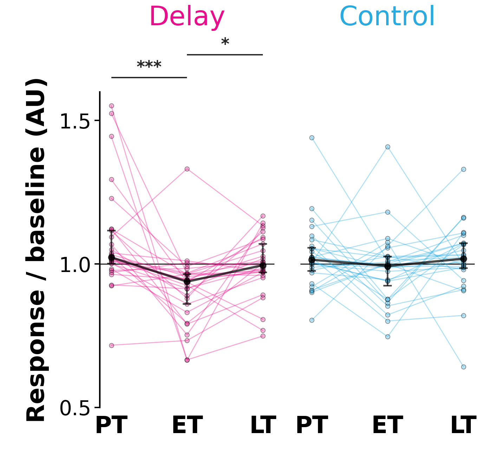
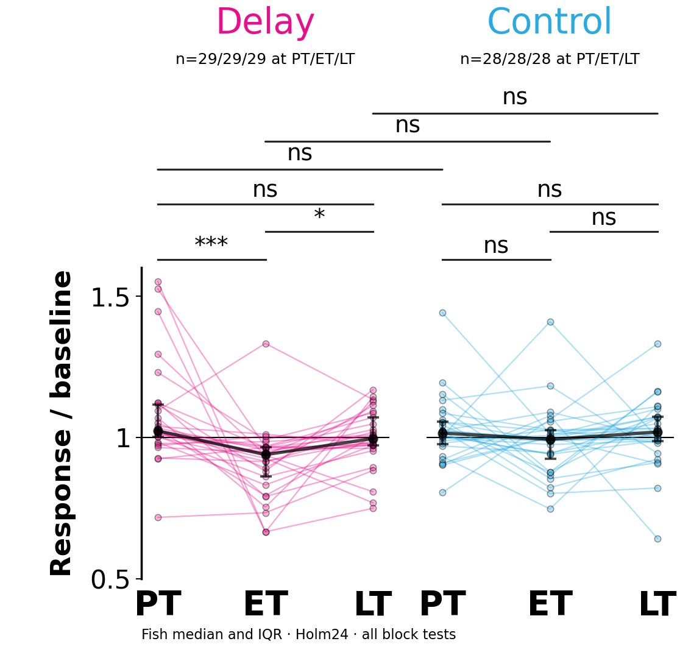
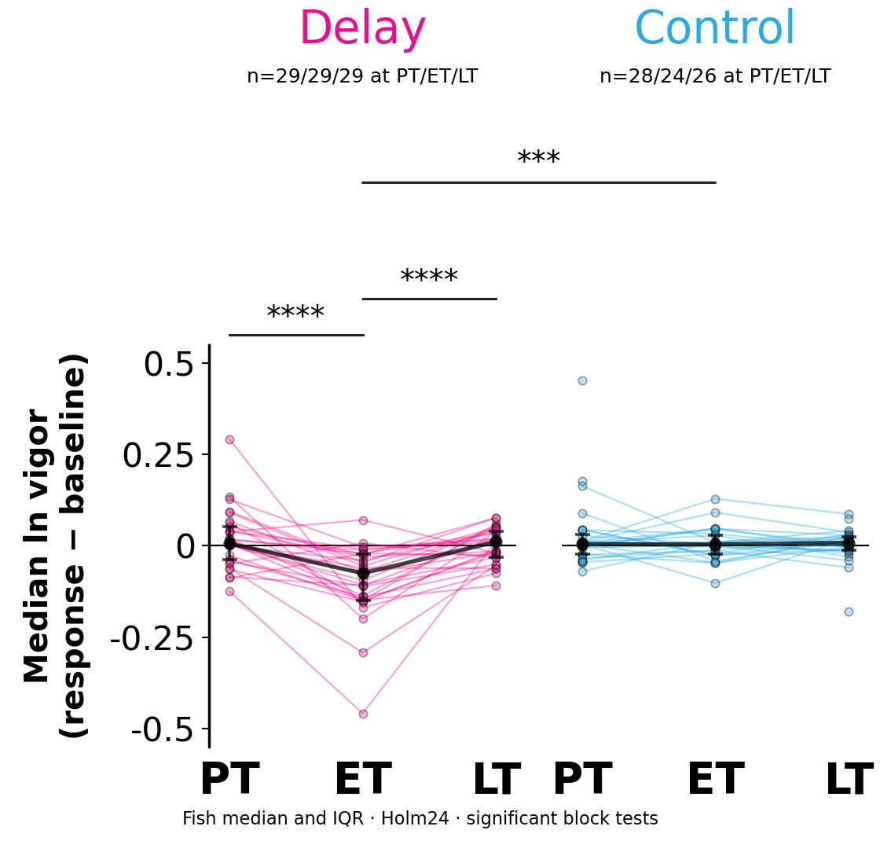
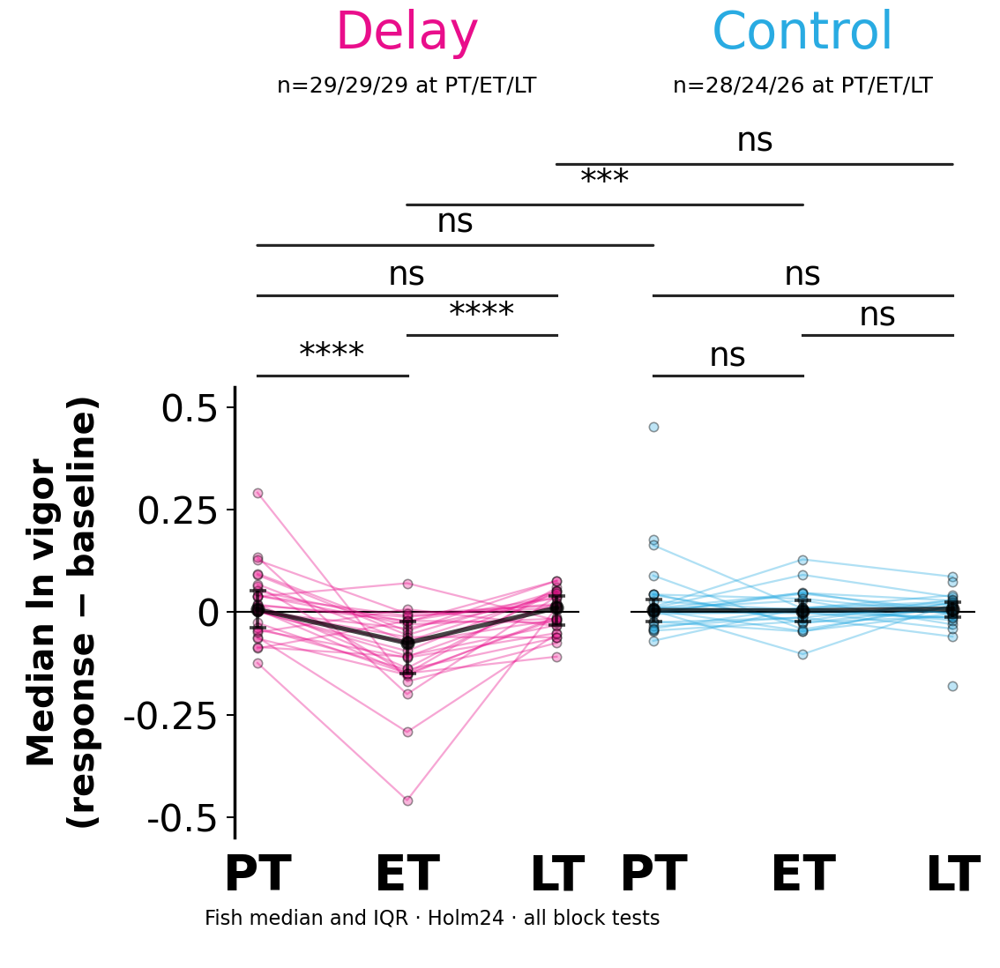
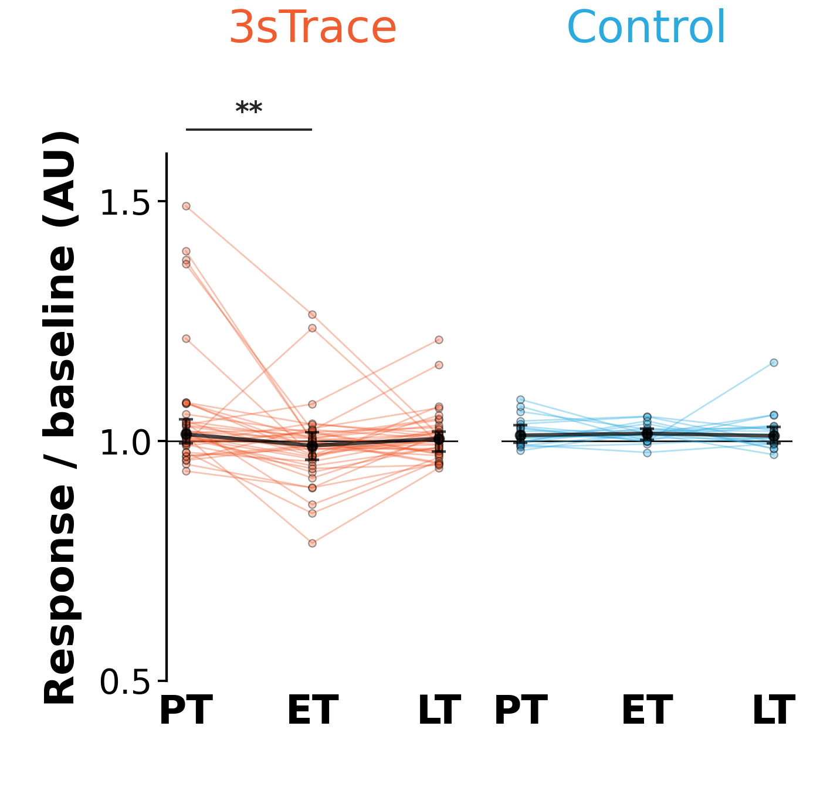
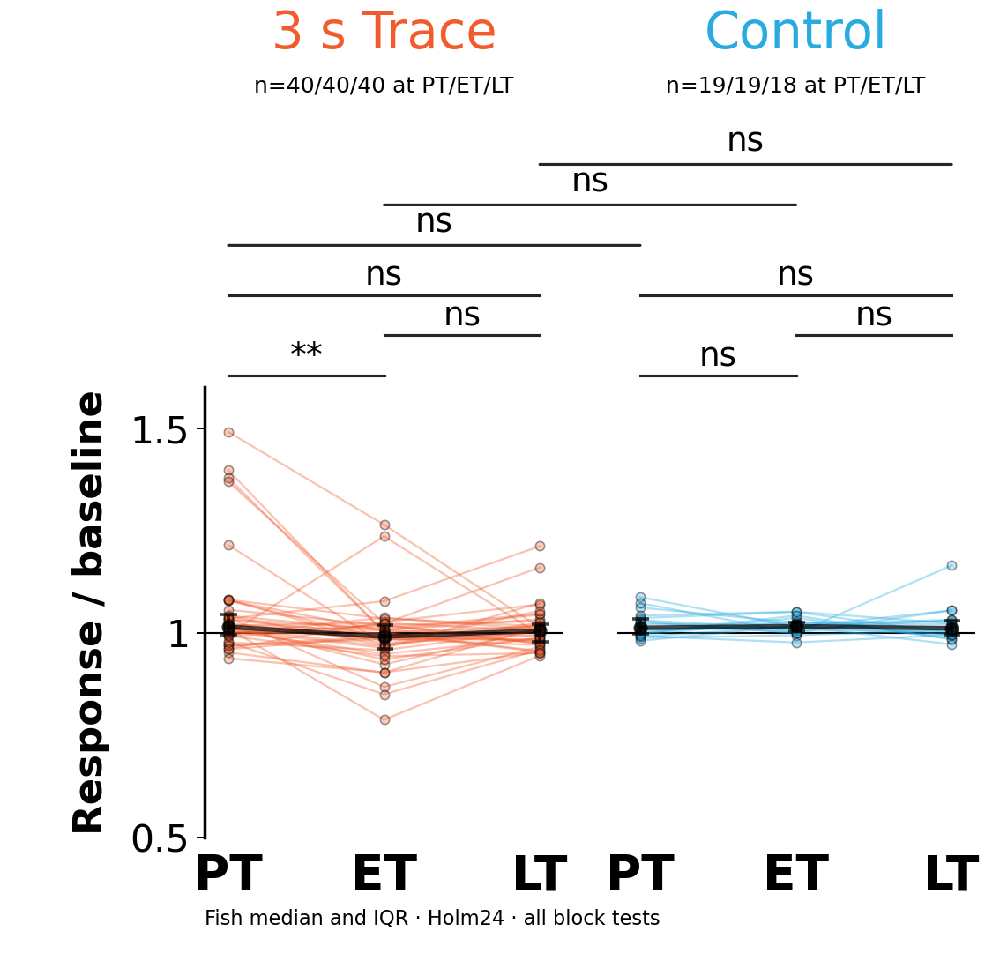
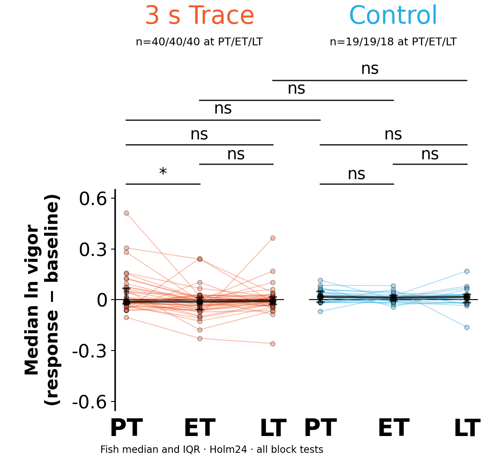
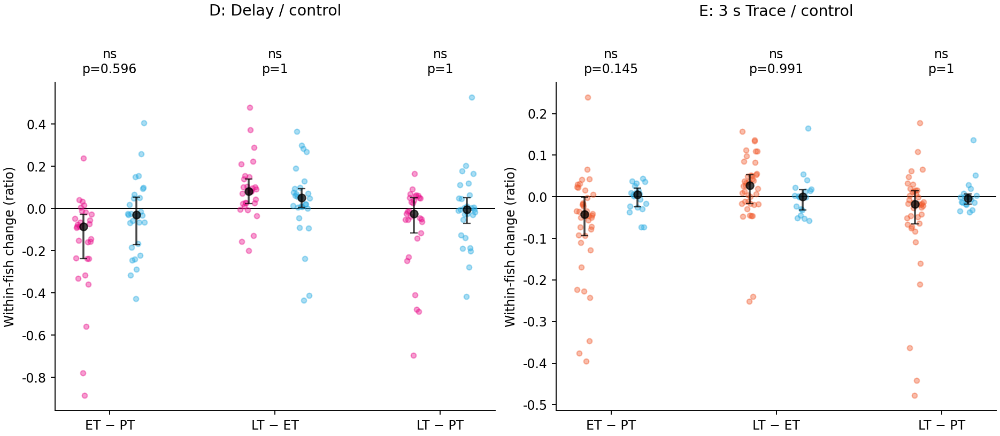

D · A · Current mean-activity ratio


PT 10–14 · ET 65–69 · LT 90–94. Same source cohorts, metric, windows and paired style. Each version has fresh fish-level tests and Holm correction across its 24 D/E comparisons. Black whiskers are fish IQR, not confidence intervals.
A measures total activity, including valid stationary frames. B measures the typical positive moving-frame vigor relative to baseline using median natural logs. B therefore changes the biological outcome, not just the vertical scale. Current corrected preprocessing is retained; historical smoothing/downsampling is not added.
Keep A as the primary outcome for overall activity suppression; use B as a supporting analysis of movement intensity. A includes stillness. B asks how vigorous the fish is when it moves, so it can miss suppression expressed through fewer bouts.
| Version | Strength | Main limitation |
|---|---|---|
| A · current ratio | Direct total mean-activity comparison; retains stillness. | Sensitive window means and noisy/small baselines; mixes movement frequency and intensity. |
| B · legacy log median | Robust typical intensity and symmetric multiplicative scale. | Excludes stillness; no movement becomes missing. Delay controls fall from 28 to 24 at ET and 26 at LT. |
B's direct Delay change comparisons survive Holm24: PT→ET p=0.00163; ET→LT p=0.000740. A has no direct change comparison below .05 after Holm24. Choose by the biological question, not the number of stars; these outcomes also differ in eligible trials/fish.
Full critique · Effect sizes and pointwise bootstrap intervals · Trial exclusions




SVG · PDF · Statistics




SVG · PDF · Statistics
These compare the change in conditioned fish with the change in controls; block stars alone do not establish differential change.


Holm24 is applied separately by version. These exploratory alternative outcomes are not independent confirmations or a license to choose by p-value. Download CSV · Scientific critique and recommendation · Medians and sample counts · Missingness and matched values
| version | panel | family | condition | left | right | n_control | n_conditioned | n_pairs | p_raw | p_holm24 | stars |
|---|---|---|---|---|---|---|---|---|---|---|---|
| ratio | D | between | delay vs control | 0 | 0 | 28 | 29 | — | 0.29577 | 1 | ns |
| ratio | D | between | delay vs control | 1 | 1 | 28 | 29 | — | 0.0064968 | 0.12994 | ns |
| ratio | D | between | delay vs control | 2 | 2 | 28 | 29 | — | 0.34223 | 1 | ns |
| ratio | D | within | delay | 0 | 1 | — | — | 29 | 2.7809e-05 | 0.00066742 | *** |
| ratio | D | within | control | 0 | 1 | — | — | 28 | 0.21827 | 1 | ns |
| ratio | D | change | delay vs control | 0 | 1 | 28 | 29 | — | 0.037243 | 0.59588 | ns |
| ratio | D | within | delay | 1 | 2 | — | — | 29 | 0.0016663 | 0.036659 | * |
| ratio | D | within | control | 1 | 2 | — | — | 28 | 0.053377 | 0.80066 | ns |
| ratio | D | change | delay vs control | 1 | 2 | 28 | 29 | — | 0.21019 | 1 | ns |
| ratio | D | within | delay | 0 | 2 | — | — | 29 | 0.21324 | 1 | ns |
| ratio | D | within | control | 0 | 2 | — | — | 28 | 0.59792 | 1 | ns |
| ratio | D | change | delay vs control | 0 | 2 | 28 | 29 | — | 0.3587 | 1 | ns |
| ratio | E | between | trace vs control | 0 | 0 | 19 | 40 | — | 0.86475 | 1 | ns |
| ratio | E | between | trace vs control | 1 | 1 | 19 | 40 | — | 0.0054009 | 0.11342 | ns |
| ratio | E | between | trace vs control | 2 | 2 | 18 | 40 | — | 0.19853 | 1 | ns |
| ratio | E | within | trace | 0 | 1 | — | — | 40 | 0.00014039 | 0.0032291 | ** |
| ratio | E | within | control | 0 | 1 | — | — | 19 | 0.98432 | 1 | ns |
| ratio | E | change | trace vs control | 0 | 1 | 19 | 40 | — | 0.0076181 | 0.14474 | ns |
| ratio | E | within | trace | 1 | 2 | — | — | 40 | 0.016506 | 0.29711 | ns |
| ratio | E | within | control | 1 | 2 | — | — | 18 | 0.79871 | 1 | ns |
| ratio | E | change | trace vs control | 1 | 2 | 18 | 40 | — | 0.070796 | 0.99114 | ns |
| ratio | E | within | trace | 0 | 2 | — | — | 40 | 0.018527 | 0.31496 | ns |
| ratio | E | within | control | 0 | 2 | — | — | 18 | 0.55087 | 1 | ns |
| ratio | E | change | trace vs control | 0 | 2 | 18 | 40 | — | 0.1369 | 1 | ns |
| log | D | between | delay vs control | 0 | 0 | 28 | 29 | — | 0.87947 | 1 | ns |
| log | D | between | delay vs control | 1 | 1 | 24 | 29 | — | 8.265e-06 | 0.00018183 | *** |
| log | D | between | delay vs control | 2 | 2 | 26 | 29 | — | 0.75513 | 1 | ns |
| log | D | within | delay | 0 | 1 | — | — | 29 | 1.1437e-06 | 2.7448e-05 | **** |
| log | D | within | control | 0 | 1 | — | — | 24 | 0.96645 | 1 | ns |
| log | D | change | delay vs control | 0 | 1 | 24 | 29 | — | 8.1477e-05 | 0.0016295 | ** |
| log | D | within | delay | 1 | 2 | — | — | 29 | 3.9823e-06 | 9.1594e-05 | **** |
| log | D | within | control | 1 | 2 | — | — | 24 | 0.89957 | 1 | ns |
| log | D | change | delay vs control | 1 | 2 | 24 | 29 | — | 3.5254e-05 | 0.00074033 | *** |
| log | D | within | delay | 0 | 2 | — | — | 29 | 0.33573 | 1 | ns |
| log | D | within | control | 0 | 2 | — | — | 26 | 0.53166 | 1 | ns |
| log | D | change | delay vs control | 0 | 2 | 26 | 29 | — | 0.88606 | 1 | ns |
| log | E | between | trace vs control | 0 | 0 | 19 | 40 | — | 0.37664 | 1 | ns |
| log | E | between | trace vs control | 1 | 1 | 19 | 40 | — | 0.018259 | 0.32866 | ns |
| log | E | between | trace vs control | 2 | 2 | 18 | 40 | — | 0.12408 | 1 | ns |
| log | E | within | trace | 0 | 1 | — | — | 40 | 0.0007144 | 0.013574 | * |
| log | E | within | control | 0 | 1 | — | — | 19 | 0.33207 | 1 | ns |
| log | E | change | trace vs control | 0 | 1 | 19 | 40 | — | 0.048725 | 0.82832 | ns |
| log | E | within | trace | 1 | 2 | — | — | 40 | 0.1787 | 1 | ns |
| log | E | within | control | 1 | 2 | — | — | 18 | 0.57984 | 1 | ns |
| log | E | change | trace vs control | 1 | 2 | 18 | 40 | — | 0.74311 | 1 | ns |
| log | E | within | trace | 0 | 2 | — | — | 40 | 0.060269 | 0.96431 | ns |
| log | E | within | control | 0 | 2 | — | — | 18 | 0.76603 | 1 | ns |
| log | E | change | trace vs control | 0 | 2 | 18 | 40 | — | 0.41498 | 1 | ns |
Placeholder/inconclusive: no authenticated cohort and processed inputs for this comparison.